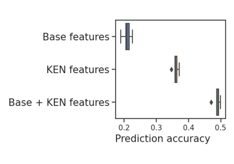

skrub.datasets.get_ken_types¶
- skrub.datasets.get_ken_types(search=None, *, exclude=None, embedding_table_id='all_entities')[source]¶
Helper function to search for KEN entity types.
The result can then be used with
get_ken_embeddings().- Parameters:
- searchstr, optional
Substring pattern that filters the types of entities.
- excludestr, optional
Substring pattern to exclude from the search.
- embedding_table_idstr, default=’all_entities’
Table of embedded entities from which to extract the embeddings. Get the supported tables with
get_ken_table_aliases(). It is NOT possible to pass a custom figshare ID.
- Returns:
DataFrameThe types of entities containing the substring.
See also
get_ken_embeddings()Download Wikipedia embeddings by type.
Notes
Best used in conjunction with
get_ken_embeddings().References
For more details, see Cvetkov-Iliev, A., Allauzen, A. & Varoquaux, G.: Relational data embeddings for feature enrichment with background information.
Examples using skrub.datasets.get_ken_types¶

Wikipedia embeddings to enrich the data
Wikipedia embeddings to enrich the data